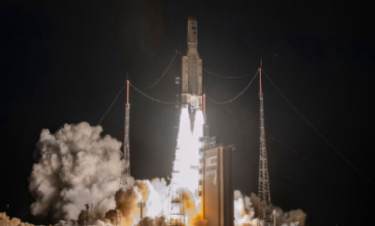

Europe enters the game
Ariane I
La fusée Ariane 1 est la première version de la famille de lanceurs fusées Ariane développée dans les années 1970 par l'Agence spatiale européenne pour que l'Europe puisse lancer ses satellites en toute autonomie. Cette version pouvait placer des charges utiles en orbite de transfert géostationnaire (GTO). Le premier vol a lieu le 24 décembre 1979. Ariane 1 est utilisée à onze reprises et connait deux échecs.
Édition Ariane I

Spécificité
- Technologie LDAC
- Batterie de 400 mAh (16 heures)
- Réduction du bruit ambiant
- Chargement 25W (10 minutes par charge)
- Bluetooth 5.2